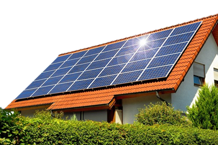

Você sabe o que é a Energia Solar?
A energia solar é uma fonte de energia renovável, utilizada para produzir energia elétrica, com esse processo sendo feito através do que chamamos de painéis solares, que convertem o calor e radiação do sol para isso utilizamos os painéis solares
Os painéis solares que utilizamos são fotovoltaicos, ou seja, eles possuem células capazes de absorver a energia solar. Quando os raios de sol atingem as placas solares, as células fotovoltaicas se ativam e, quando os átomos se colidem com as placas, absorvem os elétrons deixados pela luz solar. Porém, a energia produzida não pode ser utilizada de imediato, pois os painéis geram corrente contínua (CC) e os que as casas utilizam é corrente alternada (CA) e para isso a energia precisa de um inversor solar que vai converter a energia elétrica de corrente contínua para corrente alternada.
